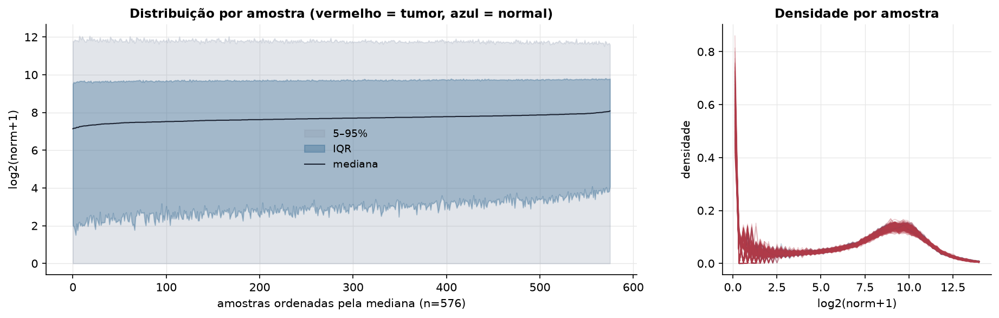
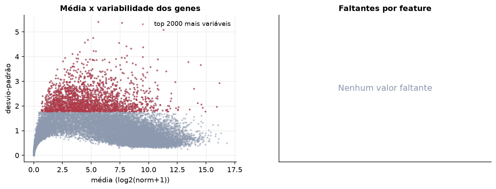
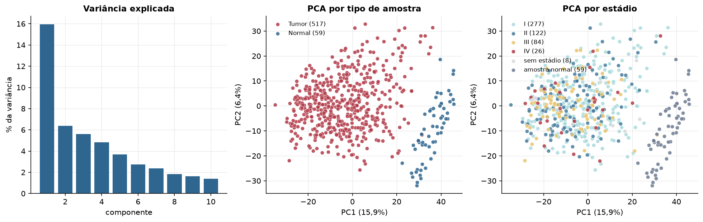
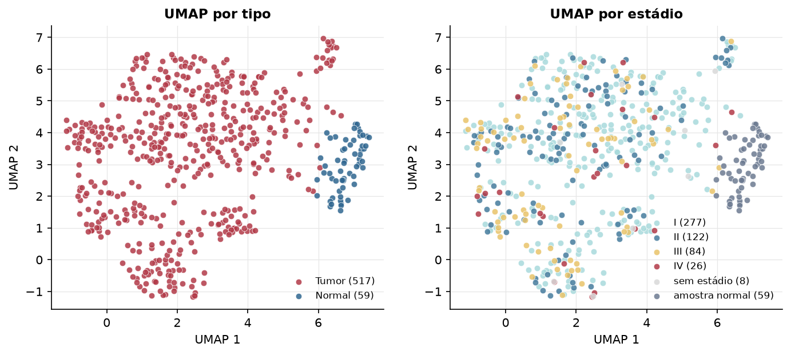
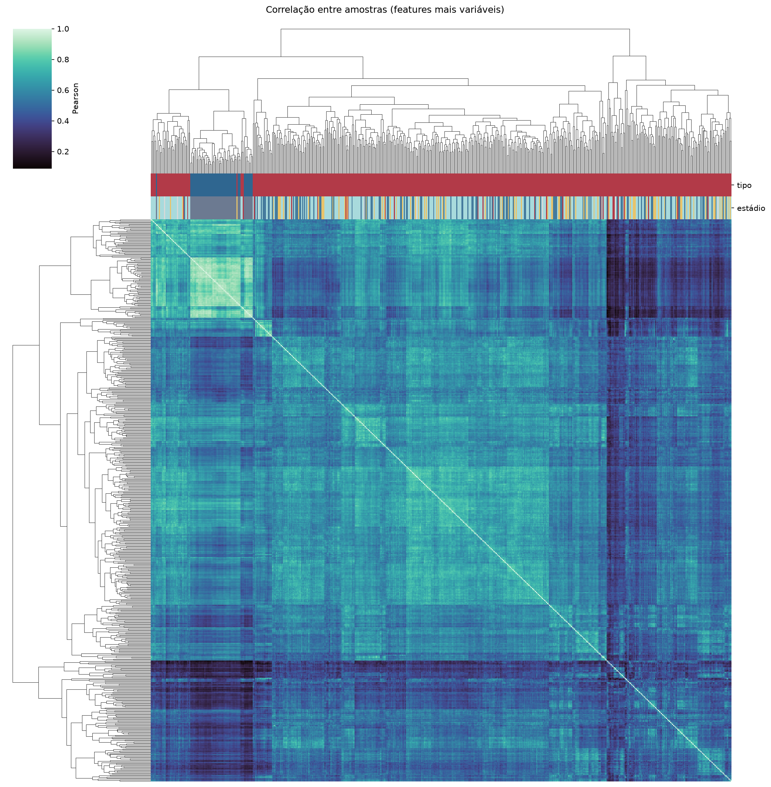
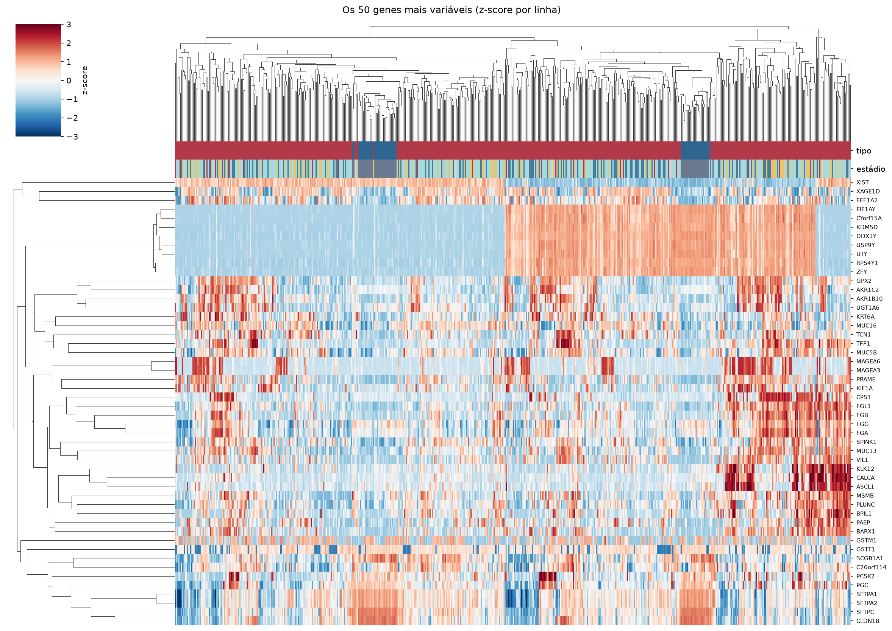
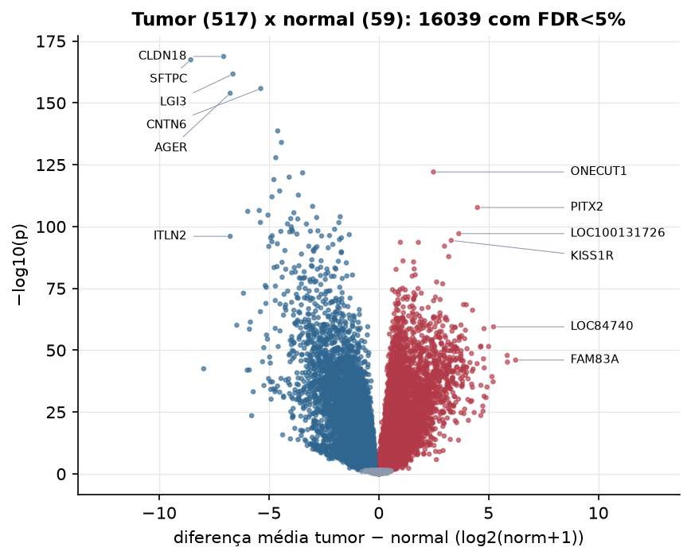
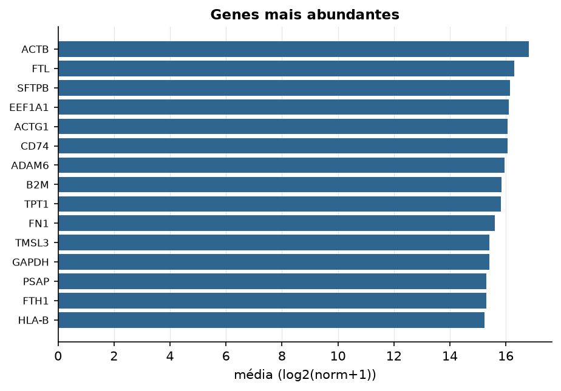

LUAD · RNA-seq (PanCanAtlas)
Illumina HiSeq, RSEM normalizado e corrigido por lote (EB++), log2(x+1) · gerado em 22/10/2026 00:46
20.531genes
517amostras tumorais
59amostras normais
0,0%valores faltantes
Fonte: PanCanAtlas EB++ via API do Xena
Estes valores já vêm normalizados e com correção de lote entre plataformas e centros. Servem bem para modelos gaussianos ou redes neurais; para um modelo de contagem use as contagens brutas do GDC.
Principais resultados
- 20.531 genes medidos em 576 amostras (517 tumorais e 59 normais); 0,0% dos valores estão faltando.
- Os dois primeiros componentes principais explicam 15,9% e 6,4% da variância das features mais variáveis.
- Correlação mediana entre amostras: 0,56.
- Amostras com correlação muito abaixo das demais (possíveis outliers técnicos): TCGA-78-7155-01.
- Tumor x normal: 16039 genes diferentes com FDR < 5% (9019 maiores no tumor, 7020 maiores no normal; 58 pacientes têm o par tumor-normal).
- Mais aumentados no tumor: ONECUT1, PITX2, LOC100131726, KISS1R, EIF2AK1, ERO1L, C11orf86, DMBX1.
- Mais reduzidos no tumor: CLDN18, SFTPC, LGI3, CNTN6, AGER, CLIC5, ACADL, AQP4.
- Associações clínicas com p < 0,05 nos componentes principais: PC1 com estádio (p=0.00078); PC1 com sexo (p=2.2e-05); PC2 com sexo (p=0.0031); PC3 com sexo (p=0.024); PC1 com idade (p=8.7e-05); PC1 com sobrevida (p=0.00013).
- Em mediana, 82,4% dos genes têm expressão acima de log2(norm+1)=1 em cada amostra.
Distribuição dos valores


Estrutura das amostras




Tumor x normal

Features mais diferentes entre tumor e normal
| diferenca_tumor_menos_normal | t | p | fdr | |
|---|---|---|---|---|
| CLDN18 | -7.063 | -40.859 | 1.7e-169 | 3.43e-165 |
| SFTPC | -8.56 | -40.008 | 3.7e-168 | 3.74e-164 |
| LGI3 | -6.639 | -46.065 | 2.11e-162 | 1.42e-158 |
| CNTN6 | -5.373 | -46.321 | 1.61e-156 | 8.11e-153 |
| AGER | -6.765 | -50.366 | 1.29e-154 | 5.21e-151 |
| CLIC5 | -4.6 | -44.987 | 2.16e-139 | 7.26e-136 |
| ACADL | -4.43 | -38.083 | 9.77e-135 | 2.82e-131 |
| AQP4 | -4.688 | -32.049 | 1.44e-128 | 3.63e-125 |
| ONECUT1 | 2.492 | 30.622 | 8.5e-123 | 1.91e-119 |
| SUSD2 | -3.466 | -31.306 | 1.9e-122 | 3.83e-119 |
| CAV1 | -4.079 | -47.831 | 1.02e-120 | 1.88e-117 |
| PEBP4 | -4.775 | -31.99 | 1e-119 | 1.69e-116 |
| TNNC1 | -4.51 | -39.592 | 4.16e-115 | 6.46e-112 |
| VEPH1 | -3.659 | -33.469 | 1.93e-113 | 2.79e-110 |
| ADH1B | -4.861 | -32.239 | 9.4e-113 | 1.27e-109 |
| PIP5K1B | -3.011 | -34.259 | 7.06e-109 | 8.91e-106 |
| PITX2 | 4.495 | 29.528 | 1.97e-108 | 2.34e-105 |
| WIF1 | -5.441 | -31.807 | 3.22e-107 | 3.61e-104 |
| GPM6A | -5.965 | -45.77 | 7.09e-107 | 7.54e-104 |
| SFTPD | -3.864 | -28.486 | 2.61e-106 | 2.63e-103 |
| SFTPA1 | -5.044 | -28.022 | 2.29e-105 | 2.2e-102 |
| CCDC69 | -1.754 | -31.677 | 1.05e-104 | 9.63e-102 |
| HYAL1 | -2.826 | -30.781 | 2.19e-104 | 1.92e-101 |
| WNT7A | -4.006 | -30.598 | 6.3e-104 | 5.3e-101 |
| DUOX1 | -3.688 | -32.386 | 8.31e-104 | 6.72e-101 |
| GKN2 | -5.387 | -30.683 | 2.09e-102 | 1.63e-99 |
| PROS1 | -1.814 | -31.164 | 2.52e-102 | 1.89e-99 |
| ABCA8 | -4.156 | -34.634 | 7.99e-102 | 5.76e-99 |
| STX11 | -3.292 | -47.607 | 9.22e-102 | 6.42e-99 |
| FHL1 | -3.983 | -43.939 | 1.21e-100 | 8.16e-98 |
Associação com variáveis clínicas
p-valores da associação dos três primeiros componentes principais (só tumores) com estádio (Kruskal-Wallis), sexo (Mann-Whitney), idade (Spearman) e sobrevida global (Cox univariado).
| estádio (Kruskal) | sexo (Mann-Whitney) | idade (Spearman) | sobrevida OS (Cox) | |
|---|---|---|---|---|
| PC1 (12,2%) | 0.000776 | 2.25e-05 | 8.71e-05 | 0.000135 |
| PC2 (6,3%) | 0.73 | 0.003 | 0.713 | 0.22 |
| PC3 (5,9%) | 0.209 | 0.024 | 0.786 | 0.011 |
Mais abundantes
